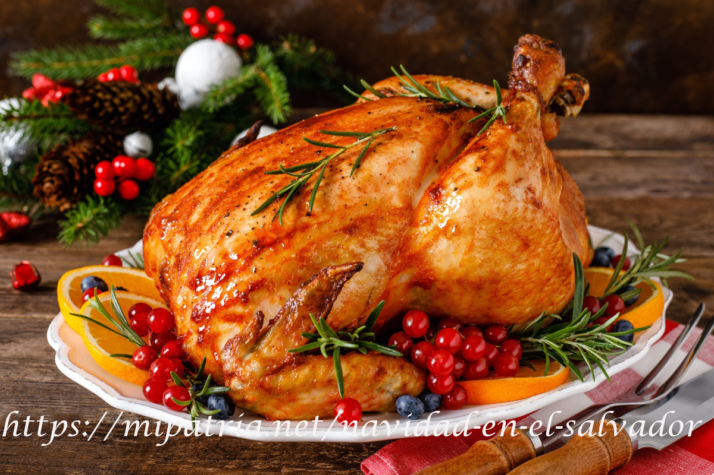

Recetas de Semana Santa.

Torrejas en miel
Las torrejas salvadoreñas son un platillo típico que no puede faltar en Semana Santa
Ver más

Pescado Calzado
Este platillo muy característico de la época de Semana Santa en el país
Ver más

Jocotes en miel
Los jocotes en miel son unas de las comidas dulces más deliciosas de Semana Santa
Ver más